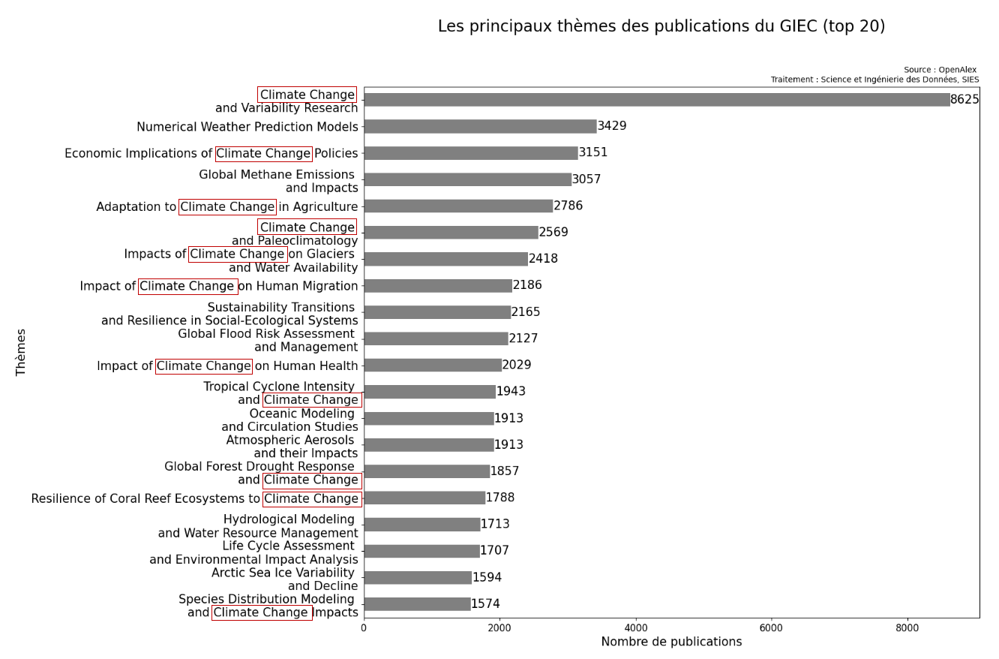
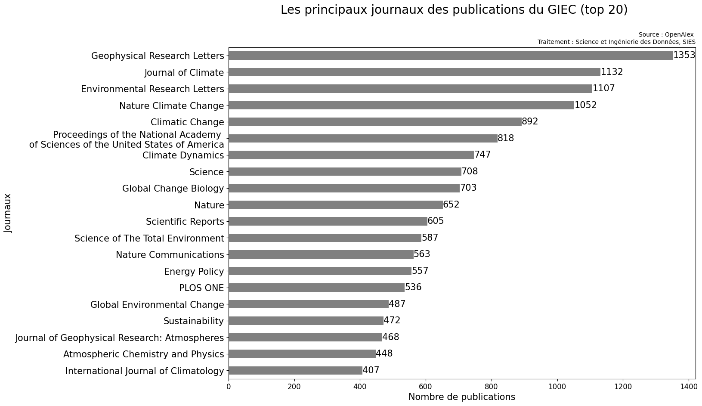
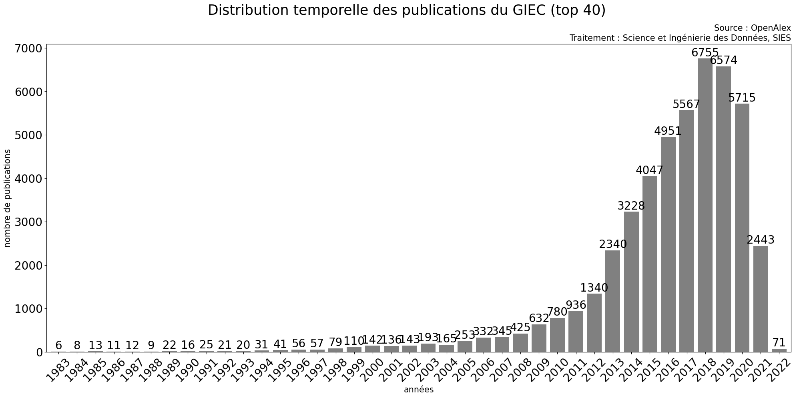
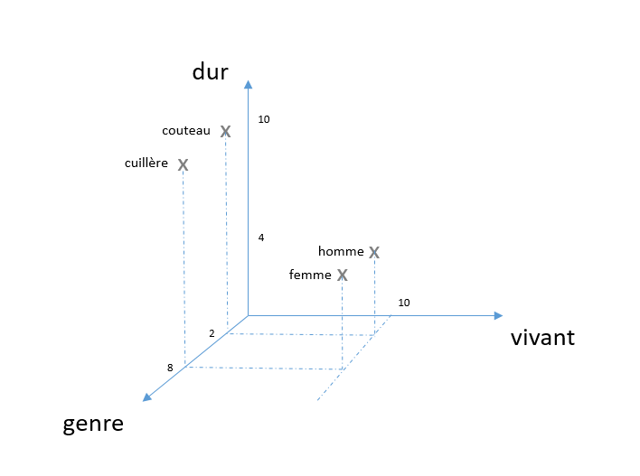
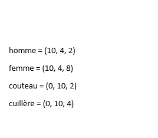

🌳 🐦 Transition écologique pour un développement soutenable - Modèle d'apprentissage
XX juillet 2024
AALLAT Hafsa
hafsa.aallat@recherche.gouv.fr
SIES - DISD
Problématiques
-
❓ Quel est le modèle qu'on veut faire ?
-
📖 Comment créer une base d'apprentissage pour le modèle et comment l'utiliser?
- 🤷♀️ Que fait ce modèle dans les faits ?
Méthodologie
- 👁️🗨️ Sélectionner des métadonnées pertinantes à partir de la base de données du GIEC nettoyée et enrichie avec OpenAlex notamment (53 258 publications)
- 🕵️ Récupérer des publications sur OpenAlex qui ne sont pas citées ni "citables" par le GIEC apriori et faire un modèle d'apprentissage
- 👀 Évaluer le modèle
- 🔓 L'intégralité du code et les données utilisées sont ouvertes : http://github.com/dataesr/teds
Un modèle qui prédit quoi ?
pour une nouvelle publication, on va chercher à savoir :
-
si elle est citable par le GIEC ?
-
si elle est "verte" ? (définition d'une publication "verte" ?)
- si elle appartient au domaine de "l'écologie et du développement soutenable" ?
Créer une base d'apprentissage (1/3)
Dans la base de données enrichie, à chaque publication du GIEC est associée :
➔ dans OpenAlex il ne reste plus que 48 219 publications avec ces quatre paramètres non vides sur les 53 258 qui s'y trouvent.
-
le "doi" : c'est l'identifiant unique de la publication
-
le "year" : c'est l'année de parution de la publication
-
le "title" : c'est le titre qui résume le mieux la publication
-
les "topics" : les grands thèmes abordés par la publication
- les "locations" : le nom des journaux dans lesquels la publication a été publié
➔ dans OpenAlex il ne reste plus que 48 219 publications avec ces quatre paramètres non vides sur les 53 258 qui s'y trouvent.
Créer une base d'apprentissage (2/3)
Comment trouver des publications au hasard qui ne sont pas relatifs au GIEC ?
Pour commencer , il vaut mieux comprendre les publications du GIEC, pour ça on peut:
-
regarder les principaux thèmes des publications
-
leur distribution temporelle
Certains thèmes sont plus fréquents que d'autres...

... certains journaux ont des thématiques particulières...

... et les publications paraîssent relativement récentes

Créer une base d'apprentissage (3/3)
➔ Avec l'API OpenAlex, on peut récupérer des publications :
-
qui ne sont pas citées par le GIEC grâce aux doi
-
qui ne comportent pas certains termes
comme "climate change" ou "environmental impact" dans les thèmes
pour ne pas biaiser notre modèle.
-
qui ont une distribution temporelle globale équivalente
(ex: pour l'année 2018 il y a 6755 publications citées par le GIEC, alors on récupère 6755 publications sur OpenAlex qui ne comporte pas certains thèmes et on reproduit cette opération pour chaque année présente dans la distribution temporelle des publications du GIEC)
Faire le modèle (1/3)
Comment faire apprendre à une machine des données textuelles ?
Pour commencer , il vaut mieux comprendre la vectorisation des mots,
prenons un exemple :
prenons un exemple :
C'est une projection de mot ou de phrase sur plusieurs dimensions


➔ couteau et cuillère paraissent plus proches entre eux que homme et femme